01 · 封面：方法与落地贯通
主讲 · F01 · 15 秒
研究主张
12页主讲（270秒）、7页备答、1页致谢；20/20 原生图通过验收。审计清单 · 来源映射 · 整张联系表 · 播放器 · 说明
01 · 封面：方法与落地贯通
主讲 · F01 · 15 秒
研究主张
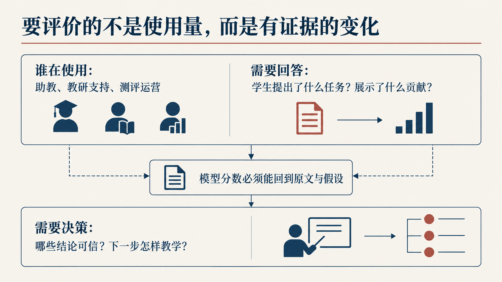
02 · 问题：评价有证据的变化
主讲 · R02A · 25 秒
问题定义
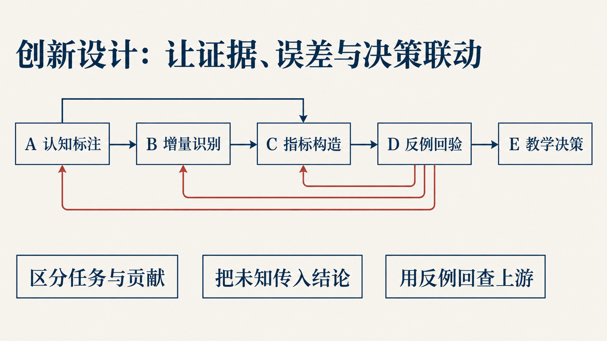
03 · A—E 递进建模链
主讲 · R04A · 30 秒
模型结构
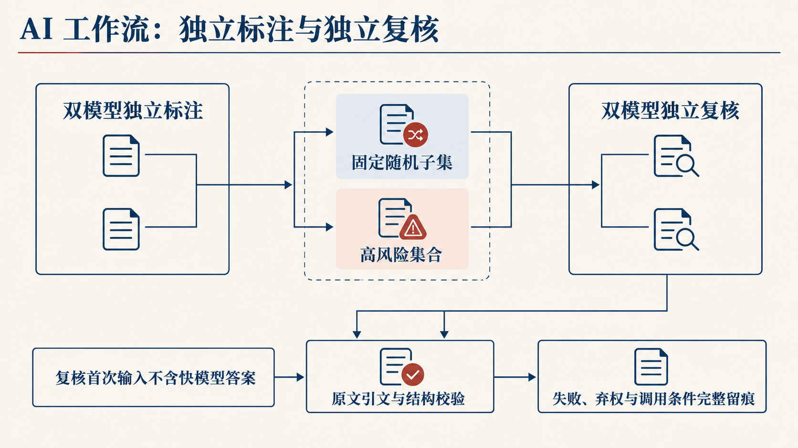
04 · 双模型标注与独立复核
主讲 · R06B · 25 秒
测评流程
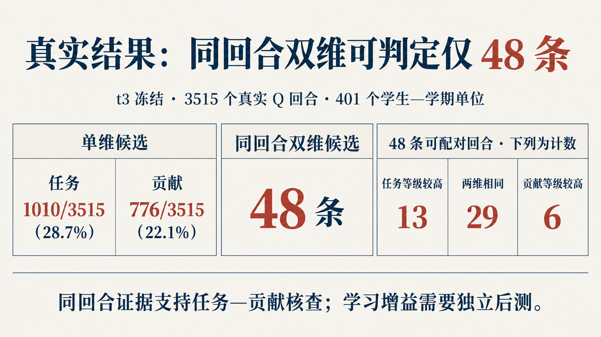
05 · 真实结果：同回合双维候选
主讲 · F05 · 35 秒
t3冻结真实回合
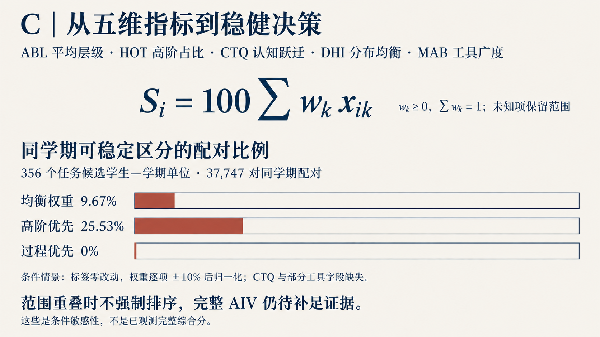
06 · 五维条件范围与稳健决策
主讲 · F07 · 45 秒
条件情景；真实样本的候选标签
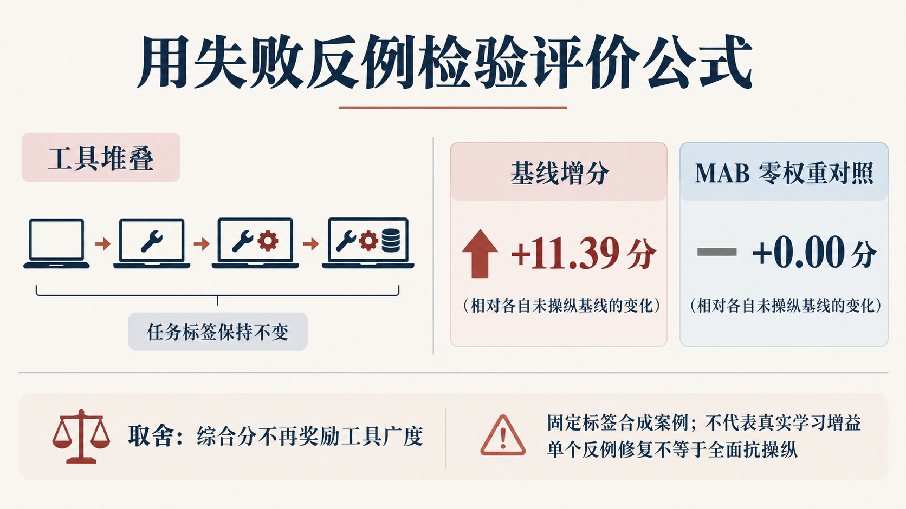
07 · 合成反例与抗操纵回验
主讲 · F08 · 25 秒
工程合成反例
08 · 平台入口：扫码查看演示
主讲 · QR · 10 秒
部署入口；非研究数据
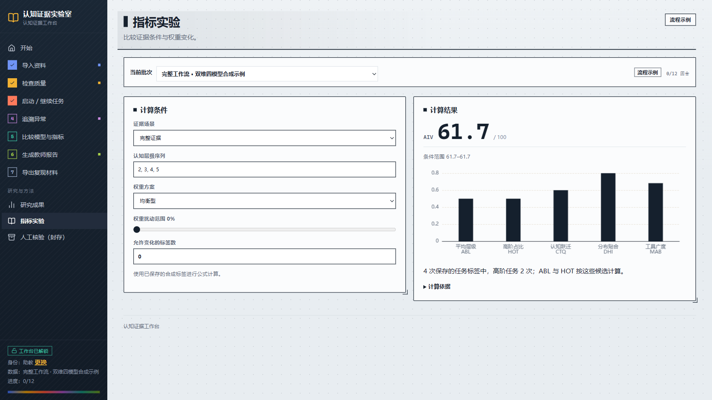
09 · 完整证据下的指标演示
主讲 · web05 · 10 秒
保存的合成标签确定性计算（61.7）
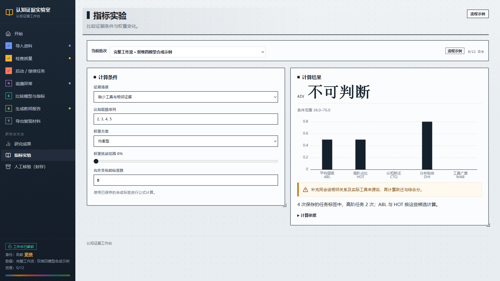
10 · 缺失证据下的条件范围与补采
主讲 · web06 · 15 秒
保存的合成标签确定性计算（36—76）
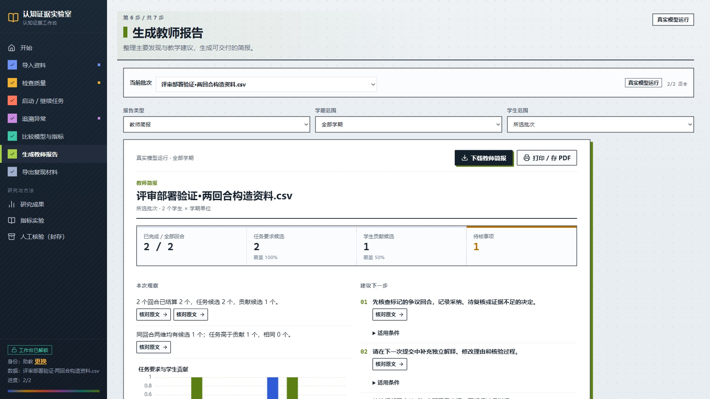
11 · 教师报告与下一步行动
主讲 · web04 · 25 秒
两条构造输入的真实模型运行
12 · 汇报完毕，敬请指教
主讲 · F10 · 10 秒
演讲封底
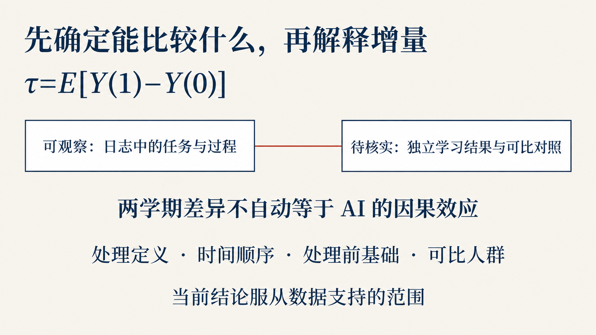
13 · 备答：因果增量识别
备答 · F06 · 0 秒
识别条件与局限
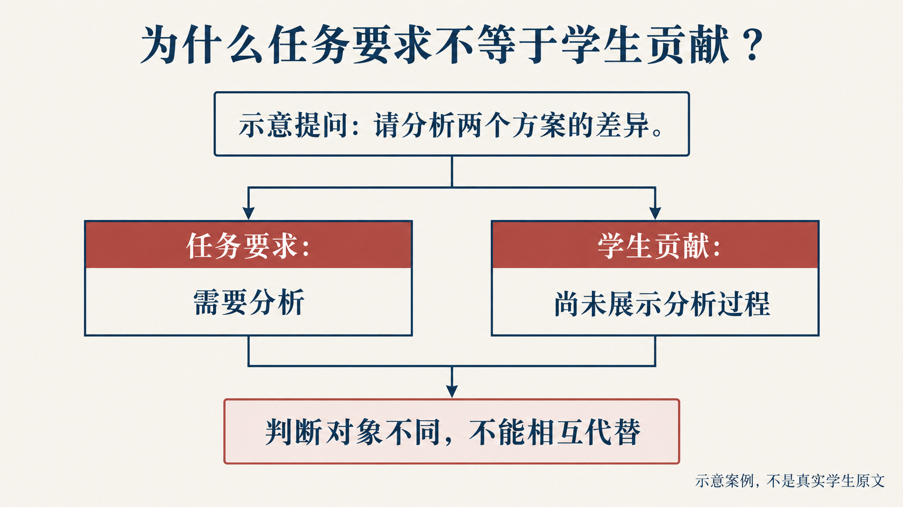
14 · 备答：任务与贡献的测量
备答 · F11 · 0 秒
示意文本；非学生原文

15 · 备答：人工复评的口径
备答 · F04 · 0 秒
人工过程观察；非因果效应

16 · 备答：权重敏感性
备答 · F14 · 0 秒
条件模型
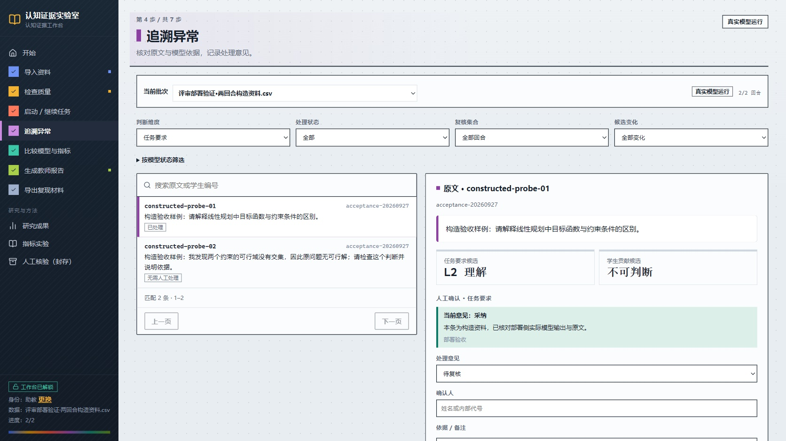
17 · 备答：原文追溯与人工核验
备答 · web03 · 0 秒
构造输入的真实模型运行
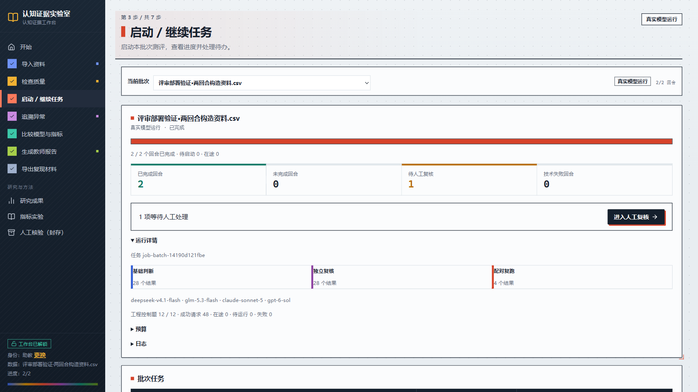
18 · 备答：四模型任务记录
备答 · web02 · 0 秒
构造输入；工程控制运行
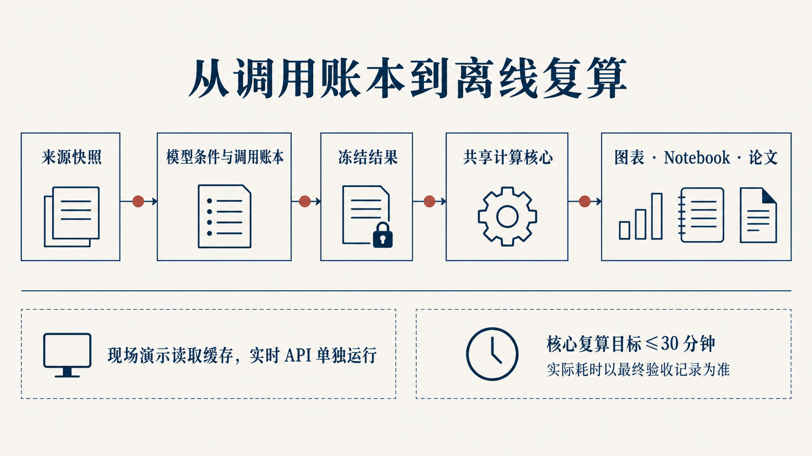
19 · 备答：仓库与复现
备答 · F16 · 0 秒
复现路径
20 · 感谢各位评委的指导
致谢 · F17 · 0 秒
问答封底